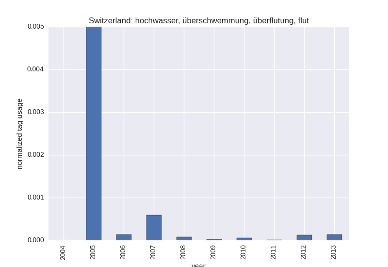

Usage¶
The main structure of Social Weather Gauge looks like this:

That is, if you want to run an analysis and get some diagram drawn, you have to work with functions in either main.flickr_analysis or main.twitter_analysis. They get the data from main.store, which either downloads new data or retrieves it from the cache on disc (folder store_room). If the store needs new data, it uses either apis.flickr_api or apis.twitter_api to access the APIs of Twitter and Flickr.
Example¶
As an example, let us draw the following diagram:
It shows the “amount of flooding” (represented by the german keywords “Hochwasser”, “Überschwemmung”, “Überflutung”, and “Flut”) per year in Switzerland when taking Flickr photo uploads as a measure.
We use the function plot_normalized_tag_usage_per_year in main.flickr_analysis. This function needs two parameters, a list of tags and a flickr location identifier (woe_id, coming from Where On Earth). As tags we use a predefined list defined in the constant dictionary main.flickr_analysis.FLOODING_TAGS, using as key de for german. This is defined in the module as
FLOODING_TAGS['de'] = 'hochwasser, überschwemmung, überflutung, flut'
The WOE of Switzerland is also predefined as a constant. You can find it in apis.flickr_api defined as:
WOE_ID_SWITZERLAND = 23424957
To find WOEs for places not predefined in Social Weather Gauge, use the function find_woe_ids in apis.flickr_api or look it up in the internet. Together we get
from main import flickr_analysis
from apis import flickr_api
tags = flickr_analysis.FLOODING_TAGS['de']
woe_id = flickr_api.WOE_ID_SWITZERLAND
flickr_analysis.plot_normalized_tag_usage_per_year(tags, woe_id)
This little script should do the following:
Iterate over the years between 2004 and 2014 (defined as constants in
main.flickr_analysisasPLOT_START_YEARandPLOT_END_YEAR).Read for every year the number of photos with one of the tags from the store
store.read(store_type=store.N_PHOTOS, query=tag_query)
where main.store.N_PHOTOS is a constant for the StoreType used for storing the number of photos returned from Flickr for a given query. The query is an instance of the class main.flickr_api.FlickrQuery.
Get the total of photos for a given year and location in a similar way with:
total_query = FlickrQuery(woe_id, year) n_photos_total = store.read(store.N_PHOTOS, total_query)
Plot the quotient using Matplotlib with Seaborn for (a lot) more beautiful plots.
Save the plot in the directory
plots/flickrunder a time-dependent name. That is, no old plots get overwritten and newer ones have a bigger number in the name.
Store¶
The purpose of the module main.store is to cache data which was retrieved from the APIs. The root directory of the store is defined as store_room by the following line in store
STORE_DIR = path.join(ROOT_DIR, 'store_room')
where ROOT_DIR is the root directory of the whole project. Actual data gets saved in subdirectories corresponding to a certain StoreType. These store types are defined as named instances of the class store.StoreType. In the moment, there are six store types defined, namely:
STREAMING_TWEETS, SEARCH_TWEETS, TWITTER_PLACE, N_PHOTOS, WUNDERGROUND_RAIN
The main way to work with the store (but not the only one) is using the functions read and save. They both use a StoreType and a Query parameter. For example, when reading data, one uses
store.read(store_type: StoreType, query: Query)
The directory to check for data is defined in store_type. There, the data is saved under a name which is derived from the query. Let us take Twitter search as an example. We use store.TWITTER_SEARCH as store type and we build a apis.twitter_api.TwitterSearchQuery with
date = date(2015, 12, 1)
query = TwitterSearchQuery(place_id='db94c1cccc67c4f4', date=date)
This instance of TwitterQuery (and therefore Query, its parent class) represents a query to the Twitter search API for Zurich at Dec 1st, 2015. The resulting tweets get cached under
store_room/twitter/search/db94c1cccc67c4f4_12-01.p
in a binary format computed with pickle from the standard Python library. If the data is not there, store.save is called, to first download the data, using a function in apis.twitter_api.